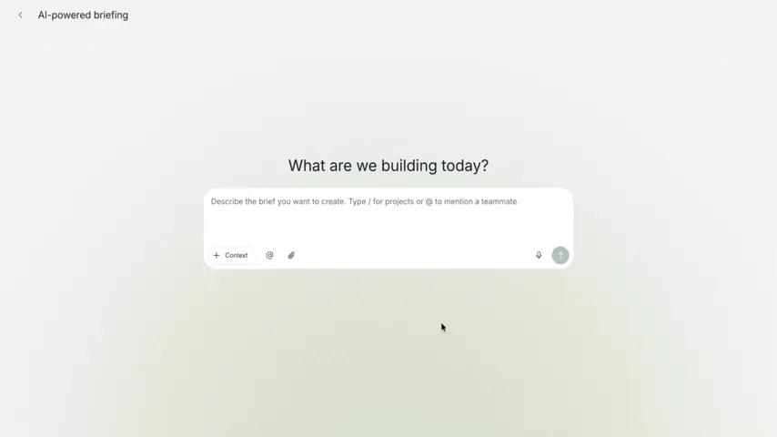
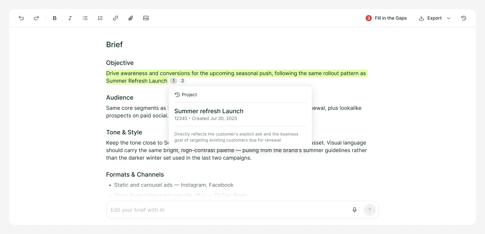
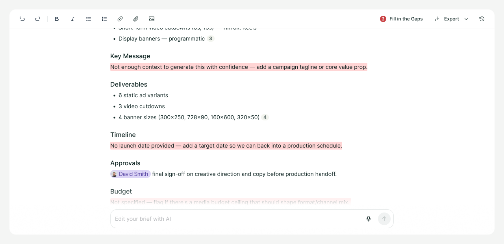
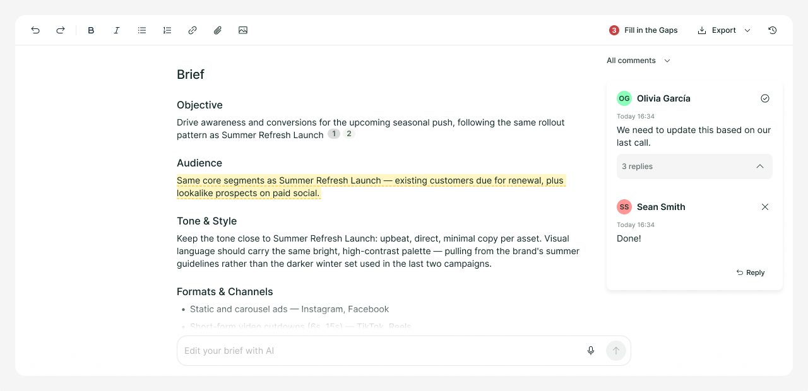

TL;DR
- Superside's briefs were complete, but not personalized: customers still had to repeat themselves on every project.
- Rather than build a personalization tool outright, the team shipped a generic AI briefing tool first to prove the direction, then invested in Brand Brain, a customer knowledge layer, once usage data validated it.
- The core design bet was trust: every generated brief shows its sources and flags what the AI didn't know, instead of guessing, and skips the chat box entirely in favor of guided, structured input.
- I pushed for that trust-first direction and the shift away from open conversation, then partnered with our PM and engineering to ship the full system.
- Result: 45% adoption within a year, an 80% faster time-to-start, and Brand Brain became Superside's biggest selling proposition.
Problem
Starting from the recently launched Service Catalog, which was a huge step towards information-rich briefs, we saw that it was only the tip of the iceberg. Even though briefs started to arrive as complete, ready-to-execute documents, we were still hearing from customers about things to improve:
- They still needed to repeat themselves on every project. They expected our Project Managers and Creatives to know about the brand and recurrent work, acting more proactively and autonomously.
- Filling out forms, specifically for more complex projects, was still a friction point. Writing briefs from scratch or adapting briefs written outside of the platform to our forms demanded extra effort, and sometimes it was still easier to talk to Superside's Project Managers and get their assistance.
Goals
This context felt like the perfect opportunity to introduce our first set of AI tools, and position the business as an AI-first company following the emergence of a new era in technology, business, and products.
As AI became a serious conversation inside the company, closing that gap called for two stages:
- First, a generative briefing tool that could get something customer-facing into the market quickly and surface real usage patterns; this solution would already solve the friction to start, enabling users to review a generated text instead of starting from scratch.
- Then, a customer knowledge layer that let generation grow out of the data that first stage revealed. This aimed to solve the customization issue, and briefs would take into consideration past projects, brand guidelines, and workflow preferences.
The team started with the generative tool, treating it as the fastest way to learn what personalization actually needed to account for.
Solution
AI Briefing doubled down on what the Service Catalog and custom brief forms started to solve: the blank canvas anxiety was gone. Customer interviews conducted prior to and after the launch, along with usage data, proved this was the right direction. From simple and not-so-structured prompts, it was possible to generate an entire brief ready for final edits and submission.
Brand Brain, a knowledge database that contained historic information from customers in multiple categories, came to aggregate even more, not only generating highly customized briefs and serving as context for multiple AI tools yet to come, like on-brand asset generation (Brand Models), but also becoming the biggest selling proposition of the business.

Where the design work lived
Advocating for trust to surface in the interface was the core of this work. Brand Brain itself is AI-first infrastructure: a knowledge base built for agents to query. Users could also browse the system and participate in its governance because transparency was another aspect defined as trust building. Brand Brain's most important surface isn't a UI of its own. It's wherever the knowledge base is being queried and used. I pushed for every generated brief to highlight each piece of text alongside its source, whether that's Brand Brain and its categories, or the original request written in the prompt, and to flag the gaps AI intentionally left ungenerated to avoid hallucinating, requiring a human to fill them in instead.
Sourcing, not guessing. Every piece of generated content in a brief links back to where it came from: a past project, a stated preference, a brand guideline. Both the customer requesting the brief and the Creatives executing it can see the reasoning, not just the output.

Surfacing gaps instead of filling them. When the system didn't have enough signal to generate a field with confidence, it said so, explicitly, rather than filling the blank with a plausible guess. A flagged gap costs a few seconds of human input. A confident hallucination costs a misdirected project and an unhappy customer. This became a hard design principle for the team, not a fallback.

A workspace, not a black box. Once a brief is generated, the customer lands in a collaborative document to fill remaining gaps, comment, and refine alongside their team, rather than treating the AI's output as final.

Speed over conversation. Every AI interface defaults to a chat box, but what we found in user interviews was that users didn't want a conversation. A quick first draft, ready for editing, sharing, and collaborating had much more value. Even viewing gaps earlier inside the brief structure was something more important, because briefers could flag them for teammates to fill in. Chats were not shareable, while the brief itself was. With Brand Brain already holding rich context on each customer, most of what a chat would need to ask to clarify was already known, making back-and-forth largely unnecessary.
Push against chat conversations. A chat interface only slowed things down: more reading, more typing, more waiting for the right prompt to land. So the product lets users add context (past projects, references, people to tag) through direct, structured actions instead of prose, skipping straight to a usable draft. The chat still exists as an orchestrator underneath, routing requests to the right flow, but it's not where the user does the work of specifying intent.
Intentionality creates trust, because it's deliberate. In brief writing, that means choosing what to include and what to leave out. In an AI-generated brief, it means choosing the right context to start from. Briefs became trustworthy not only because they were complete, but because every choice behind them had a source, or was flagged for a human to review.
Trade-offs and Learnings
Starting with a generic brief generator instead of a knowledge system that could empower the existing forms, rather than building an entirely new tool, was a bold move. AI Briefing was decided as a proof of concept first. It gave real indications that this was the right direction, but the real value turned out to be in the knowledge base itself.
This project tested my ability to negotiate and adapt. In the end, I worked the full cycle, partnering closely with our Product Manager and engineering to help ship the system that went on to become Superside's most important selling proposition, and the foundation new products and teams were later built on.